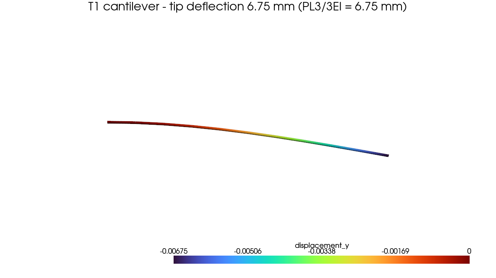

Your first model in 10 minutes¶
You're going to build, solve, and inspect a real finite-element model end to end: a steel cantilever beam, fixed at one end, with a point load at the tip. By the end you'll have a deflection number you can trust — because you'll check it against a formula you already know by heart.
We pick a cantilever on purpose. It is the Hello, World of structural mechanics: one element type, one support, one load, and a closed-form answer that's been in every textbook for a century. If apeGmsh gets this right, you can believe what it tells you about the models that don't have closed-form answers.
The problem¶
P = 10 kN (downward)
|
v
Fixed ████|=============================● ← tip
████| (free end)
████|<------------ L = 3 m ------------>|
Section: 0.10 m × 0.20 m rectangle (strong axis bending)
Material: steel, E = 200 GPa
A tip-loaded cantilever has a deflection you can write down without solving anything:
$$ \delta_{\text{tip}} \;=\; \frac{P\,L^{3}}{3\,E\,I} $$
With $P = 10{,}000\ \text{N}$, $L = 3\ \text{m}$, $E = 200\times10^{9}\ \text{Pa}$, and $I = \tfrac{b h^{3}}{12} = \tfrac{0.10 \cdot 0.20^{3}}{12} = 6.667\times10^{-5}\ \text{m}^4$:
$$ \delta_{\text{tip}} \;=\; \frac{10{,}000 \cdot 3^{3}}{3 \cdot 200\times10^{9} \cdot 6.667\times10^{-5}} \;=\; 6.75\times10^{-3}\ \text{m} \;=\; 6.75\ \text{mm} $$
Keep 6.75 mm in your back pocket. That's the number apeGmsh has to reproduce.
Units
apeGmsh is unit-agnostic — it stores the numbers you give it. We work in consistent SI throughout: metres, newtons, pascals. Pick a consistent system and stick to it; the deflection comes out in metres because the geometry is in metres.
Install¶
The [all] extra pulls in everything you need for this tutorial, including the
web viewer. You also need OpenSees — apeGmsh drives it through
openseespy, which [all] installs for
you. (Not on PyPI yet — the line installs from the repo.) If you only want the
modelling core, drop the [all], but
this tutorial runs a real solve, so install [all].
The whole model¶
Here is the entire script. We'll walk through it block by block right after — but it's short enough to read top to bottom first, so do that. Under 40 lines of real work takes you from an empty session to a verified deflection.
from apeGmsh import apeGmsh, Results
from apeGmsh.opensees import apeSees, OpenSeesModel
from apeGmsh.results.capture.spec import DomainCaptureSpec
# --- Problem data (consistent SI: m, N, Pa) ---
L = 3.0 # length [m]
E = 200e9 # Young's mod. [Pa] (steel)
b, h = 0.10, 0.20 # section sides [m]
A = b * h # area [m^2]
Iz = b * h**3 / 12.0 # strong-axis I [m^4]
P = 10_000.0 # tip load [N] (downward, -y)
# --- 1. Geometry + physical groups, inside a session ---
with apeGmsh(model_name="cantilever") as g:
p0 = g.model.geometry.add_point(0.0, 0.0, 0.0)
p1 = g.model.geometry.add_point(L, 0.0, 0.0)
beam = g.model.geometry.add_line(p0, p1)
g.model.sync()
g.physical.add(1, [beam], name="Beam") # the line -> elements
g.physical.add(0, [p0], name="Fixed") # left end -> support
g.physical.add(0, [p1], name="Tip") # right end -> load + readout
g.mesh.sizing.set_global_size(L / 10.0) # ~10 line elements
g.mesh.generation.generate(1)
fem = g.mesh.queries.get_fem_data(dim=1)
# --- 2. Build the OpenSees model through the typed bridge ---
ops = apeSees(fem)
ops.model(ndm=2, ndf=3) # 2-D frame: ux, uy, thetaz
transf = ops.geomTransf.Linear(vecxz=(0.0, 0.0, 1.0))
ops.element.elasticBeamColumn(pg="Beam", transf=transf, A=A, E=E, Iz=Iz)
ops.fix(pg="Fixed", dofs=(1, 1, 1)) # clamp ux, uy, thetaz
ts = ops.timeSeries.Linear()
with ops.pattern.Plain(series=ts) as pat:
pat.load(pg="Tip", forces=(0.0, -P, 0.0)) # downward point load
ops.constraints.Plain()
ops.numberer.Plain()
ops.system.BandGeneral()
ops.test.NormDispIncr(tol=1e-10, max_iter=10)
ops.algorithm.Linear()
ops.integrator.LoadControl(dlam=1.0)
ops.analysis.Static()
# --- 3. Solve, capturing the tip displacement ---
spec = DomainCaptureSpec(opensees=ops)
spec.nodes(pg="Tip", components=["displacement"])
with ops.domain_capture(spec, path="run.h5") as cap:
cap.begin_stage("tip_load", kind="static")
ops.analyze(steps=1)
cap.step(t=1.0)
cap.end_stage()
# --- 4. Read the result back by physical-group NAME ---
results = Results.from_native("run.h5", model=OpenSeesModel.from_h5("run.h5"))
slab = results.nodes.get(pg="Tip", component="displacement_y")
delta_fem = abs(float(slab.values[-1, 0]))
delta_exact = P * L**3 / (3.0 * E * Iz)
print(f"delta_FEM = {delta_fem*1e3:.3f} mm")
print(f"delta_exact = {delta_exact*1e3:.3f} mm")
print(f"error = {abs(delta_fem-delta_exact)/delta_exact*100:.4f} %")
Run it. You should see:
That's our 6.75 mm, dead on. (The error is exactly zero, not just small: the elastic beam-column element carries the cubic bending shape exactly, so for a tip point load it is the closed-form solution — no discretization error to speak of.)

Now let's see why each block does what it does.
Step 1 — A session owns the geometry¶
with apeGmsh(model_name="cantilever") as g:
p0 = g.model.geometry.add_point(0.0, 0.0, 0.0)
p1 = g.model.geometry.add_point(L, 0.0, 0.0)
beam = g.model.geometry.add_line(p0, p1)
g.model.sync()
apeGmsh(...) opens a session — the live Gmsh kernel that owns your
geometry and mesh. Everything you do to the model goes through composites
hanging off g (here g.model.geometry). Using it as a context manager
(with ... as g:) means the kernel is cleaned up for you when the block exits.
We place two points and a line between them — that's the whole geometry. The
g.model.sync() flushes those operations into the kernel so the next steps can
see them.
Physical groups: name the parts you care about¶
g.physical.add(1, [beam], name="Beam") # dim 1 = the curve
g.physical.add(0, [p0], name="Fixed") # dim 0 = a point
g.physical.add(0, [p1], name="Tip")
This is the single most important habit in apeGmsh. A physical group is a
named tag you attach to geometry — "Beam", "Fixed", "Tip". From here on
you address everything by these names, never by raw entity numbers. Supports go
on "Fixed", the load goes on "Tip", and when you read results back you ask
for "Tip" again. The names survive meshing, solving, and post-processing —
they are your handle on the model through every stage.
The first argument is the dimension: 1 for the line (which will become
beam elements), 0 for the end points (which will become single nodes for the
support and the load).
Mesh it¶
g.mesh.sizing.set_global_size(L / 10.0) # target element length
g.mesh.generation.generate(1) # 1 = mesh 1-D entities
fem = g.mesh.queries.get_fem_data(dim=1)
We ask for a target element length of L/10, then generate(1) meshes the
1-D geometry into about ten line elements. (For a linear-elastic beam under a
tip point load you'd get the exact answer with a single element — but ten
keeps the picture honest and gives the viewer something to draw.)
The payoff line is get_fem_data(dim=1). This takes a snapshot of the
meshed model — nodes, elements, and your physical groups, frozen into a
FEMData object called fem. That snapshot is the bridge between the geometry
world (inside the with) and the OpenSees world (outside it). Notice we grab
it before the block closes, then carry it forward.
Step 2 — The typed OpenSees bridge¶
apeSees(fem) constructs the OpenSees bridge from your snapshot. This is
how apeGmsh drives OpenSees: not by writing raw ops.element('...', ...)
strings, but through typed primitives with real signatures your editor can
autocomplete and your type checker can verify. You declare what you want; the
bridge resolves your physical-group names against fem and emits a correct
deck.
ops.model(ndm=2, ndf=3) must come first. We use a 2-D frame: 2 spatial
dimensions, 3 degrees of freedom per node — horizontal, vertical, and an
in-plane rotation ($u_x, u_y, \theta_z$). That rotation DOF is what makes this
a beam and not a truss.
transf = ops.geomTransf.Linear(vecxz=(0.0, 0.0, 1.0))
ops.element.elasticBeamColumn(pg="Beam", transf=transf, A=A, E=E, Iz=Iz)
Every beam-column element needs a geometric transformation — the rule that
maps the element's local axes to global ones. Linear is the small-deflection
choice (exactly right for this elastic problem); the vecxz vector orients the
local axes. The transform comes back as a handle — you pass the object
itself, not a string name — and apeGmsh wires up the tags for you.
Then ops.element.elasticBeamColumn(pg="Beam", ...) writes every element in
the "Beam" physical group as a linear-elastic beam-column with the area,
modulus, and second moment we computed up top. One line, the whole member —
because you targeted the group by name.
The clamp. dofs=(1, 1, 1) fixes all three DOFs (1 = fixed, 0 = free) at every
node in "Fixed" — here that's the single left-end node. A fully-fixed end is
exactly the cantilever boundary condition.
ts = ops.timeSeries.Linear()
with ops.pattern.Plain(series=ts) as pat:
pat.load(pg="Tip", forces=(0.0, -P, 0.0))
Loads live inside a pattern. A Plain pattern scaled by a Linear time
series ramps the load from zero to full over the analysis. pat.load(pg="Tip",
...) puts a force on every node in "Tip" — (0.0, -P, 0.0) is P newtons
straight down (negative $y$), with no moment.
The remaining lines (constraints, numberer, system, test, algorithm,
integrator, analysis) are the standard OpenSees analysis chain — the
solver recipe. For a single linear step this is boilerplate; later tutorials
explain when you'd reach for something other than Linear/Static.
What the bridge carries over for you
Two things you declare on the session reach the solver automatically:
multi-point constraints and loads declared via g.loads. Here we
declared the load the other way — directly on ops with pat.load —
which is equally fine; just don't declare the same load both ways or
you'll apply it twice. Masses and supports are always set on ops
(ops.mass, ops.fix), so the runnable deck is explicit about them.
Step 3 — Solve and capture¶
spec = DomainCaptureSpec(opensees=ops)
spec.nodes(pg="Tip", components=["displacement"])
with ops.domain_capture(spec, path="run.h5") as cap:
cap.begin_stage("tip_load", kind="static")
ops.analyze(steps=1)
cap.step(t=1.0)
cap.end_stage()
We want the tip displacement, so we declare a capture spec: record the
displacement of every node in "Tip". Again — by name.
ops.domain_capture(...) opens an in-process recorder writing to run.h5.
Inside the with, we open a stage, run ops.analyze(steps=1) (one static
load step — the solve happens here, in-process, through openseespy), snapshot
the state with cap.step(t=1.0), and close the stage. When the block exits,
run.h5 holds both the result and a copy of the model, in one file.
This is one path of several — on purpose
We did two things here that have alternatives, and this tutorial picks one of each so you reach a result without a detour:
- How you run — we solved in-process with
ops.analyze. You can instead export a runnable deck withops.tcl("model.tcl")orops.py("model.py")and run it elsewhere (great for sharing or version-controlling the OpenSees model). - How you record — we used domain capture (→
Results.from_native). You can also use classic recorders (→Results.from_recorders) or an MPCO recorder for STKO (→Results.from_mpco).
The read-side API is identical whichever you choose. When you're ready to pick, see the results & export recipes — you don't need them to finish here.
Step 4 — Read it back, by name¶
results = Results.from_native("run.h5", model=OpenSeesModel.from_h5("run.h5"))
slab = results.nodes.get(pg="Tip", component="displacement_y")
delta_fem = abs(float(slab.values[-1, 0]))
Results.from_native(...) opens the run file. The model= argument is
required — Results needs a model broker to translate physical-group names
back into nodes and elements. Here the model lives in the same file (the
Composed-file pattern), so we point OpenSeesModel.from_h5 at the same path.
Then the moment of truth: results.nodes.get(pg="Tip", component="displacement_y").
You ask for the vertical displacement of the "Tip" group — the same name you
used to apply the load — and get back a typed slab of values. slab.values[-1, 0]
is the last step, first (and only) tip node. We take the magnitude, print it
next to PL³/3EI, and watch them match.
This is the payoff of naming everything: you never once touched a raw node number. The model, the load, and the readout all speak the same language — your physical-group names.
See it¶
results.show_web() launches the notebook-safe web viewer — an interactive
3-D view of the deformed shape, right in your Jupyter output cell. Use this one
in notebooks.
Don't call results.viewer() in a notebook
The desktop viewer (results.viewer(), default blocking=True) runs a
native VTK + Qt event loop that crashes a Jupyter or VS Code kernel.
In a notebook, always reach for results.show_web() instead.
What you just learned¶
In one short script you ran the entire apeGmsh spine:
- Session → geometry → physical groups. Open a session, draw the geometry,
and name the parts you care about with
g.physical.add(...). Those names are your handle on the model forever after. get_fem_datais the snapshot. It freezes the meshed model into aFEMDataobject that carries your names across the boundary into OpenSees.- The typed bridge.
apeSees(fem)drives OpenSees through typed primitives —ops.geomTransf.Linear,ops.element.elasticBeamColumn,ops.fix(pg=...),ops.pattern.Plain— never raw command strings. - Capture →
Results→ read by name.ops.domain_capturerecords the solve;Results.from_native(..., model=...)reads it back;results.nodes.get(pg=...)pulls displacements out by physical-group name. show_web()for the picture, and it's the kernel-safe choice in notebooks.
And the model checks out — 6.75 mm, exactly PL³/3EI.
Where next¶
- A plate in tension — the same typed bridge on a
2-D solid:
nDMaterial, a tension field, and stresses you read back by physical group. - The SS beam, the apeGmsh way — meet the loads/masses/sections composites: declare a distributed load once and let apeGmsh resolve the tributary work for you.
- Save, reload, view — persist a model to disk and reopen it, and the full notebook-safe results loop.
- Core mental model — the six ideas behind everything you just did, on one page.
Next: A plate in tension.